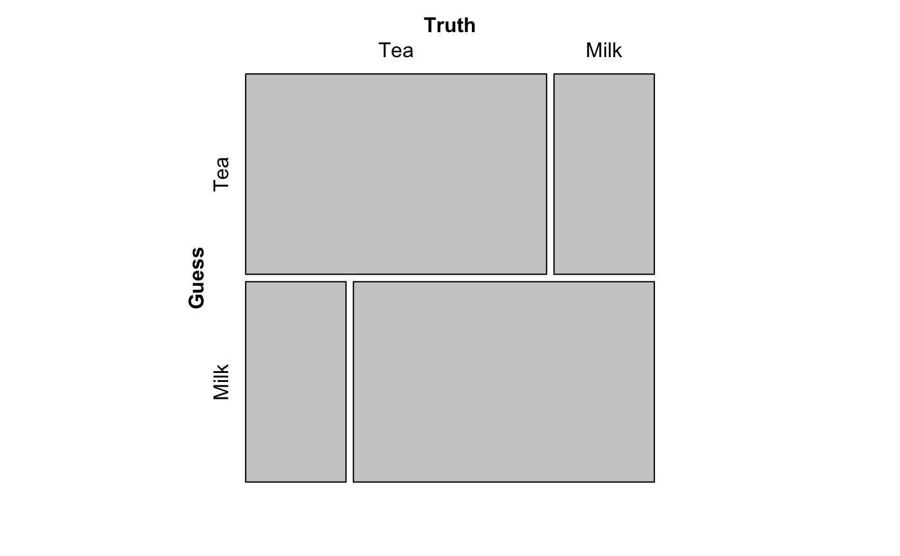

Convert a data frame or a matrix into an xtabs object.
as.xtabs(x, ...) # S3 method for data.frame as.xtabs(x, rowvar = NULL, colvar = NULL, labels = 1, ...) # S3 method for matrix as.xtabs(x, rowvar = NULL, colvar = NULL, ...)
| x | object (typically a data frame) to be converted to |
|---|---|
| ... | additional arguments to be passed to or from methods. |
| rowvar | name of the row variable as character string |
| colvar | name of the column variable as character string |
| labels | column of data frame that contains the labels of the row variable. |
An xtabs object.
The intended use is to convert a two-way contingency table stored in a data
frame or a matrix into an xtabs object.
# example from example(fisher.test) df <- data.frame( X=c('Tea','Milk'), Tea=c(3,1), Milk=c(1,3) ) xt <- as.xtabs(df, rowvar="Guess", colvar="Truth"); xt#> Truth #> Guess Tea Milk #> Tea 3 1 #> Milk 1 3#>#>#> #>#> #> #>